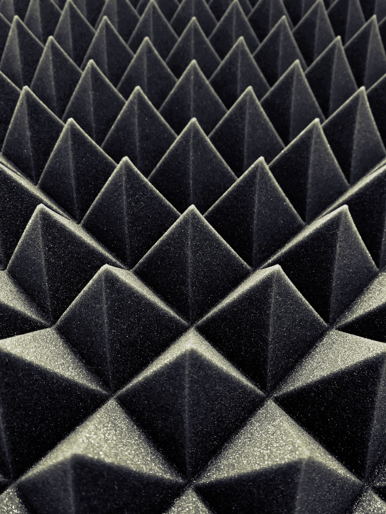
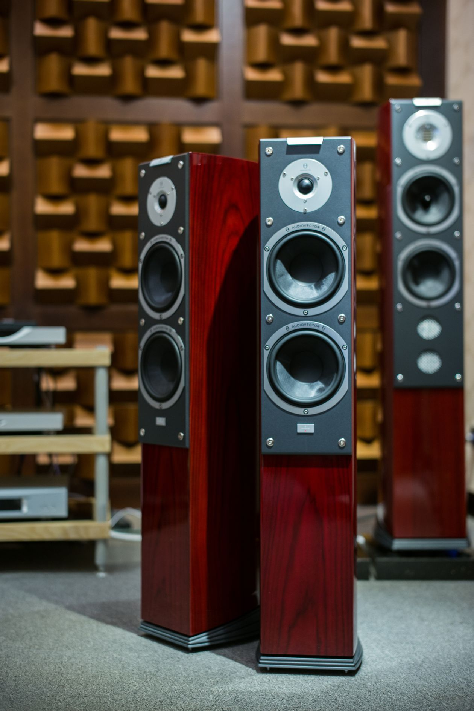

Bristol · rooms measured across the UK · studio@frequencyroom.example
CASE WORK — ASK · DID · OUTCOME
Case work, with the figures left in.
Every project below is told the way it was billed: what was asked, what I did, what changed. The before/after numbers are the practice’s own measurements — calibrated measurement microphone, room-analysis software, taken at the listening seat before and after the work. They are one seat in one room, not a laboratory certificate, and each case says what the numbers don’t show as plainly as what they do.
Dan Whitfield’s mixes travelled badly. The kick drum that sounded balanced in his room changed weight — and apparently pitch — in his car and on every other system. He had budgeted for new monitors and a new converter. He booked a measurement first, to be sure.
MEASURED FIRST
The room’s length is 4.0 m, so its first axial mode is 343 ÷ (2 × 4.0) = 42.9 Hz — run the home page’s explorer at 4.0 m and it will give you the same number. At the seat: a +11 dB peak at 43 Hz against the 1 kHz band, and a deep null at 86 Hz — the second mode’s dead spot, exactly where the desk had been placed. The monitors were fine. The seat was standing in the room’s arithmetic.
WHAT I DID
Seat and monitors moved 60 cm forward, off the null. Floor-to-ceiling corner traps in all four vertical corners. Eight panels at the first-reflection points and a four-panel ceiling cloud over the desk. No new speakers, no new converter — the budget line for both was deleted in the report, in writing, before any treatment was sold.
THE OUTCOME — OWN MEASUREMENTS AT THE SEAT
MEASUREMENT AT THE SEAT
BEFORE
AFTER
43 Hz peak, relative to the 1 kHz band
+11 dB
+4 dB
RT60, 125 Hz octave band
0.62 s
0.34 s
RT60, average 500 Hz – 4 kHz
0.41 s
0.29 s
86 Hz null depth at the seat
−14 dB
−5 dB (seat moved)
Billed: survey £420 + design £1,450 + treatment fitted £1,580 (12 panels and 4 corner traps, at the printed rate card). The peak is reduced, not abolished — a 4.0 m room has a 42.9 Hz mode whatever hangs on its walls, and the report says so. What changed is that the seat no longer sits in the worst of it, and the decay at that frequency halved.
“Jonas measured first and argued with my speaker placement, not my speakers. The kick drum sits in one place now — in the room, and in the car on the way home.”
— DAN WHITFIELD, MIX ENGINEER & STUDIO OWNER, LEEDS · ON THIS CASE
Case 02 — A podcast room inside a glass box
MARKETING AGENCY, BRISTOL · MEETING ROOM 5.2 × 3.9 × 2.7 M · FIXED PACKAGE £1,650 · COMPLETED JUNE 2025
THE ASK
A two-host podcast recorded in a glass-walled meeting room. Voices echoed off three glass walls, and the producer was spending about an hour per episode on gates and noise reduction to make it presentable.
SAID FIRST, IN WRITING
Treatment is not isolation. Panels would fix the reflections inside the room; they would not stop traffic noise arriving from outside it, and no honest specification could promise otherwise on their budget. That sentence was in the survey report before the package was quoted — it is the sentence this case exists to show.
WHAT I DID
The one piece of isolation that was affordable: door seals and a solid-core door. Then treatment: a heavy curtain track on the worst glass wall, the package’s 12 panels placed for the two fixed seats, and the microphones moved in to 15 cm with a placement card taped to the desk so every session starts from the same geometry.
THE OUTCOME — OWN MEASUREMENTS + THE CLIENT’S LOG
MEASUREMENT
BEFORE
AFTER
RT60, mid-band average at the seats
1.1 s
0.38 s
Editing time per episode (producer’s own log)
≈ 60 min
≈ 20 min
Traffic audible in pauses
Yes
Still yes — stated before the work
The third row is the point. The room is now a good podcast room on a quiet street’s schedule, and the client accepted the limit in writing before paying. The £1,650 package covered the survey, the 12 panels fitted and the placement work; the door and curtain were the client’s own spend, specified in the report — which is why the bill held no surprises in either direction.

Reference photograph — acoustic foam panels (photo: David Underland, Pexels). Shown for texture only: the panels fitted in this room were fabric-faced mineral wool, specified in the survey report, not foam.
A hi-fi owner had been quoted £6,200 by a dealer for interconnects and speaker cable said to “open up the soundstage”. Before paying, he booked a £340 listening-room tune and asked a fair question: is it the cables?
MEASURED FIRST
It was not the cables. The room is 5.0 m long — first axial mode 34.3 Hz, again checkable on the home page. There was a slap reflection off the bare wall behind the seat, and the speakers stood asymmetrically: 1.9 m from one side wall, 2.6 m from the other, so the two channels were playing two different rooms.
WHAT I DID
Speakers squared to the room and moved 40 cm off the back wall. Seat forward 30 cm, out of the slap. Four panels: two at the first-reflection points, two behind the seat. Total spend: £340 for the tune and £340 for the panels.
THE OUTCOME — OWN MEASUREMENTS AT THE SEAT
MEASUREMENT AT THE SEAT
BEFORE
AFTER
200 Hz dip depth
−9 dB
−3 dB
Left/right match through the midrange
6 dB apart
Within 2 dB
Spend on cables
£6,200 quoted
£0 — quote declined
Cables carry the signal; the room decides what it sounds like when it arrives. Spend on the room first — it is also the only spend you can measure afterwards. The dealer’s cable may be beautifully made. In that room, at that seat, it would have changed nothing the microphone could find.

Reference photograph — tower speakers in a listening room (photo: Pixabay, via Pexels). Not the client’s speakers or room; his are described in measurements above, which is the form the evidence takes in this practice.
Client names appear as first name and role, by permission, in this fictionalised record of the practice. The figures are the practice’s own measurements as labelled in each case.
Your room has numbers too.
Every case here started with a £420 measurement and a written report. If the report concludes your room is already fine, that is the whole bill.